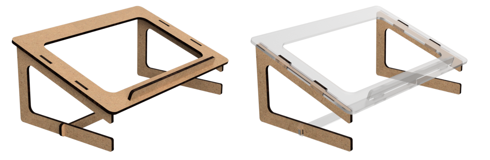
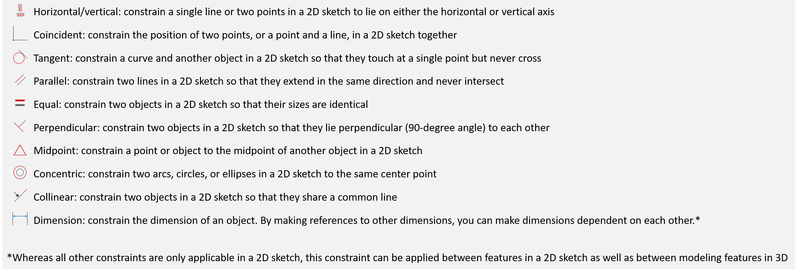

Constraints and parametric behavior
The purpose of this study is to specify parametric behavior in 3D CAD models by adding constraints to a 3D CAD model. Specifying parametric behavior is useful in 3D CAD modeling as it defines how the 3D CAD model behaves when it is resized. This enables designers to quickly make derived designs by only modifying the parameters and to reuse designs more efficiently.
A designer can specify parametric behavior in a 3D CAD model by adding constraints to the model. Constraints ensure that a given relation between entities in the design always remains satisfied when the model is resized. For example, consider this laptop stand below. If we would resize it to fit a different laptop, we can define multiple relations that should remain satisfied and thus should be constrained.
For example, if we look at the side legs of the laptop stand (right), we can define several relations that should remain satisfied when resizing the laptop stand, and thus should be constrained. One of those is that the left edge (red) and the bottom edges (green) should always be perpendicular, as shown in the illustration below.
In the same part of the laptop stand, we can define other relations that should always remain satisfied, and thus should be constrained. Some of these relations are shown below.
The previous relations were defined in a single 2D sketch. However, it can also be desirable to constrain relations in 3D. If we look at the example of our laptop stand, we have to make sure the different plates always fit. So if the thickness of a plate changes, the length tab to hold the plate should be updated accordingly, as shown below.
In summary, the following constraints can be added in 3D CAD models (note that all but the last one are only applicable within a 2D sketch).
